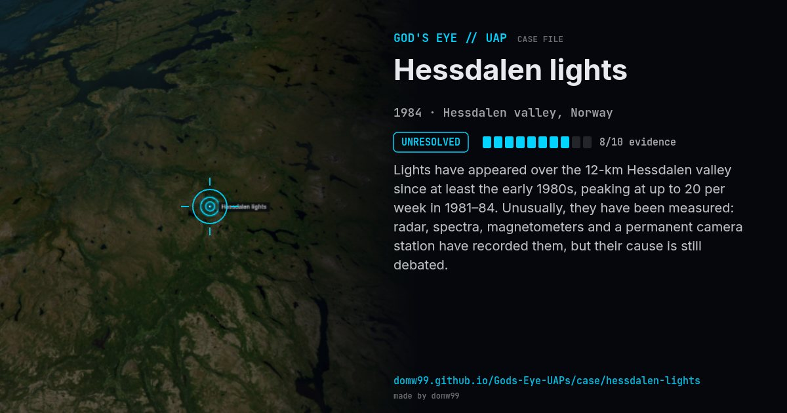

Hessdalen lights
UNRESOLVED

Lights have appeared over the 12-km Hessdalen valley since at least the early 1980s, peaking at up to 20 per week in 1981–84. Unusually, they have been measured: radar, spectra, magnetometers and a permanent camera station have recorded them, but their cause is still debated.
Explanation
Studied since 1983 by Project Hessdalen with an automated measurement station; hypotheses include combustion of dust from the valley’s ores, plasma, and piezoelectric effects.
What was seen
Shape: White, yellow or red floating lights
Witnesses: Residents and scientists
Duration: Ongoing since ~1981
Browse
- Norway
- 1980s
- Unresolved
- Recurring lights
- Many independent witnesses
- Photographs
- Radar tracking
- Video footage
- Infrared or other sensor data
- Lights and fireballs